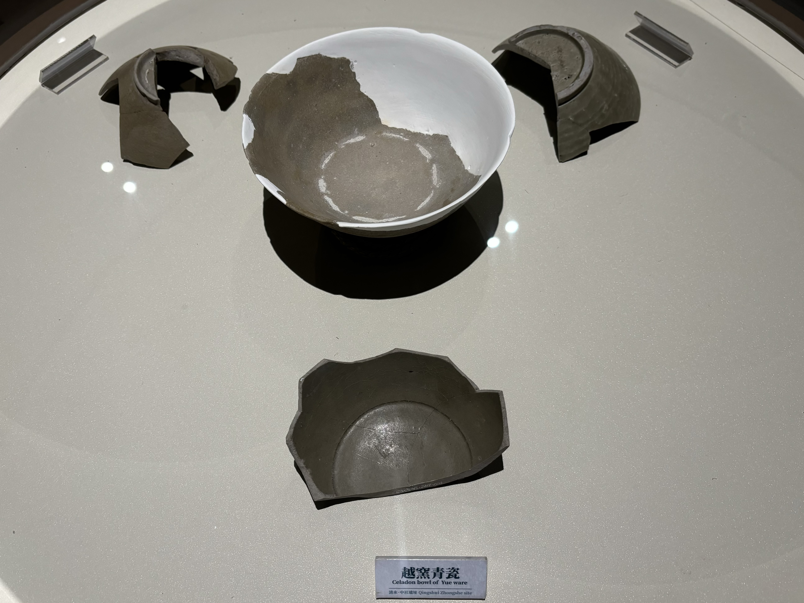
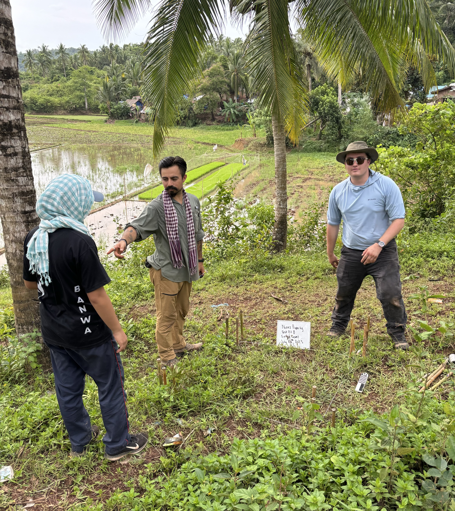
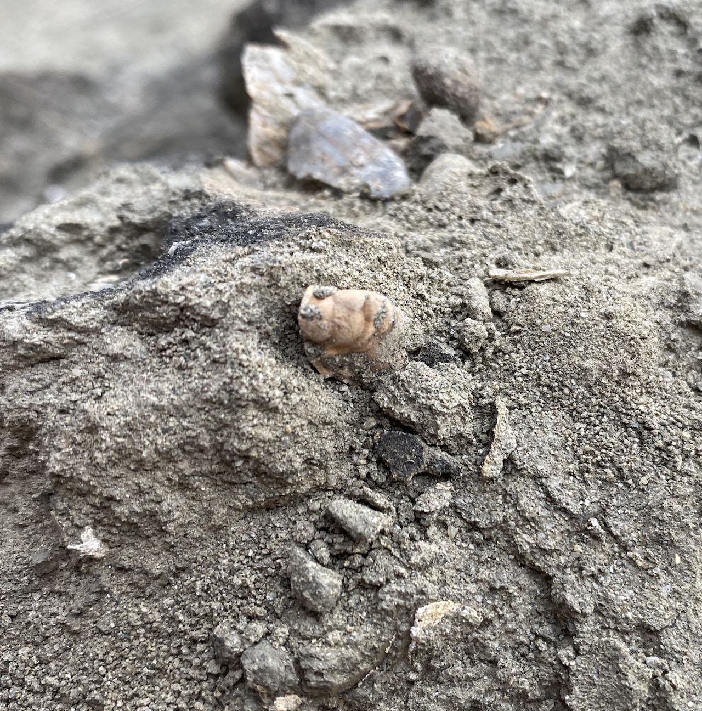

Research

Sugar production in Early Modern Taiwan
European exceptionists argue that their unique culture was the key to the Industrial Revolution. However, historian Kenneth Pomeranz suggests that there may have been more similarities than previously assumed between the economies of Europe and East Asia. By examining the organization of sugar production and the consumer culture in Taiwan, my dissertation aims to integrate the theory of the Great Divergence with the study of material culture. Parts of my dissertation were presented at WAC-10.

Paleopathology on the Maritime Silkroad
Recently, I have been working to build more collaborations with UCLA paleopathologist Jennifer Rashidi to study bioarchaeology in Taiwan. Our current focus is on Qingshuichongshe, a settlement in central Taiwan dating from the 5th to 11th centuries. This site has yielded the largest amount of Yue celadon found in Taiwan to date, and we have identified multiple individuals with evidence of different epidemics, likely introduced through maritime trade. Discovering signs of systematic infection can help us understand why local communities later developed immunity to diseases brought by colonizers. We plan to conduct further studies to investigate how this population treated patients and managed these diseases. This year, we brought a student and an alumnus from UCLA to join our project, and attracted media attention. We are looking forward to bringing more!

Ceramic studies in Southeast Asia
As a member of the UCLA Southeast Asia Archaeology Lab, I have been participating in field projects in the Philippines since 2022. I am actively collaborating with local scholars to determine the age and provenance of trade ceramics. So far, we have discovered that the area where an early church in Naga City now stands may have been part of maritime exchange networks as early as the 7th century.In the coming years, we also plan to conduct more field projects in sites known as Binanuahan, which means “old settlements” in Filipino.

Biodiversity of fish in Taiwan
How do ancient and modern fishery practices impact maritime biodiversity? Our research in Tainan Science Park indicates that the decrease of fish remains in Southern Taiwan archaeological sites was not a result of overfishing but geomorphological changes in the ancient time, against previous uncritical assumptions. Modern fisheries, however, accelerate fish growth and narrow their life spans. This discovery is published on Estuarine, Coastal and Shelf Science. Our finding is reported by The Liberty Times.